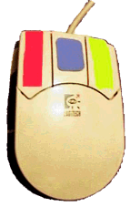
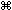
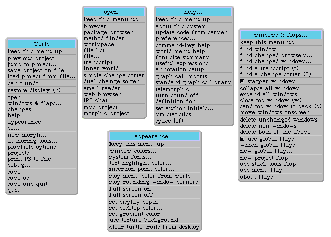
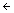

２００３年８月１３日更新
このページは、Andrew C. GreenbergさんとAndrew P. Blackさんによる"Squeak Smalltalk: Language Reference"の翻訳です。Blackさんから許可を得て公開しています。
Version 0.0, 20 November 1999, by Andrew C.
Greenberg, werdna@mucow.com
Version 1.2, 26 April 2001, by Andrew P. Black, black@cse.ogi.edu
Version 0.1J, 16 Febrary 2003, by ICHIKAWA, Yuji. (based on
Squeak version 3.2)
Based on:
Smalltalk-80: The Language and Its
Implementation, Author: Adele Goldberg and David Robson
Squeak Source Code, and the readers of the
Squeak mailing list.
Squeak site: http://www.squeak.org
Squeakクラスリファレンスも見てください。
Squeak（とSqueakを生み出したSmalltalk-80）は、３ボタン（または３ボタン相当の）マウス付きのコンピュータを前提にしています。これらのボタンは、それぞれ「赤ボタン」「黄ボタン」「青ボタン」と呼ばれています。赤ボタンは、「モノ」を選択する際に使います。黄ボタンは、ウィンドウの中の「モノ」を操作する際に使います。青ボタンは、ウィンドウそのものを操作する際に使います。ただし、これらの規則は慣例的なもので、いつもそうという訳ではありません。
多くの今時のマウスは３ボタンではなく、また、ボタンは色付ではないので、様々な対応付けが用いられています。
色付でない３ボタンマウスでは、通常の対応付けは以下の通りです。
左ボタン
->赤 中央ボタン
->黄 右ボタン
->青
３ボタンマウスのWindowsマシンで、この対応付けにするには、SqueakのWindowsタイトルバーを右クリックして、VM Preferences >> Use 3 button mouse mappingを選択します。デフォルトの対応付けは、以下の通りです（２ボタンマウス用です）。
左ボタン
->赤 右ボタン
->黄 Alt+左ボタン
->青
MacOSでは基本的に１ボタンマウスを使用していますので、対応付けは以下のものが使われています。
ボタン
->赤 Option+ボタン
->黄 +ボタン
->青
３ボタンマウスを購入することをお勧めします。私は指を馴染ませる間、ボタンにラベルで色をつけていました。また、上の対応付けとは違う対応付けを選択しました。
もしスクロール用のホイールマウスを持っているなら、"wheel up"をcommand-upArrowに、"wheel down"をcommand-downArrowに対応付けるとよいでしょう。Squeakでスクロールするのにホイールを使うことができるようになります。（訳注：バージョン3.2では最初から対応付けられています。）
Squeakでは、以下のような色々なシステムメニューを通してSmalltalkの機能(service)を使うことができます。（訳注：バージョン3.2では若干変更されています。）

ワールドメニュー。 時々「メインメニュー」と呼ばれるこのワールドメニューは、システムプロジェクト（訳注：プロジェクトについては、Squeakを最初に立ち上げた時の"Welcome to..."ウィンドウを参照してください）の背景のところで赤ボタンをクリックすることで呼び出せます。このメニューを使って、イメージファイルやチェンジファイルを保存したり、別名で保存したり、Squeak仮想マシンの実行を終了させたりできます。また、下の４つのメニューを含む、たくさんのほかのメニューを呼び出すことができます。
オープンメニューは、システムブラウザや、ワークスペース、チェンジソータ、トランスクリプト、ファイルリスト、更にはメーラ(Celeste)、ウェッブブラウザ(Scamper)を含む、様々なシステムツールを起動することができます。
ヘルプメニューは、オンラインヘルプの他に、プレファレンスダイアログや、環境に関する問い合わせ、Genieなどの辞書を（訳注：この２つ、何についての話なのかよくわかりませんでした）呼び出したり、Squeakのアップデート機能(facilities)を呼び出せます。
ウィンドウ＆フラップメニュー（訳注：バージョン3.2では、ウィンドウメニューとフラップメニューは別々に用意されています）では、システムウィンドウや（モーフィックでの）フラップを操作するための機能(service)を呼び出せます。フラップはスクリーンの枠についた小さなタブのことで、タブをクリックすることで引き出しのように引き出して、そこに置いたもの何でもすばやくアクセスすることができます。是非使ってみてください。オープンメニューを使うよりむしろ、Toolsフラップを使うと、簡単に新たなシステムツールを取り出すことができます。
概観(appearance)メニューでは、システムの概観の色々な点を変えることができます。特に、画面の色設定を調整したり、フルスクリーンモードの切り替えを行うことができます。
システムブラウザやワークスペース、ファイルリスト、トランスクリプトを含む、Squeakの標準テキストコンテナウィジェットを使うアプリケーションでは、テキスト操作や、他のシステム機能(functionality)へのアクセス方法(facility)を提供します。これらの機能(facility)の多くは、赤ボタンメニューを使って呼び出すことができますが、多くは、もっと簡単に、特殊キーの組み合わせを使って呼び出すことができます。特殊なアプリケーションでは、このコマンドキーのサポートはまちまちです。WindowsではAltキーと一緒に、MacOSではキーと一緒に、下記のテーブルにある文字を押すことでコマンドキーを入力することができます。大文字の場合には、ShiftキーとAlt()キーを同時に押すか、ctrlキーを該当する文字を押すことでコマンドキーを入力することができます。
（訳注：Windowsの通常のアプリケーションではカット＆ペーストなどはctrlキーで実行します。Squeak上でAltキーとctrlキーをひっくり返すには、World Menu->appearance...->preferences...->general->swapControlAndAltKeysをオンにします。）
| キー | 記述 |
備考 |
| z | 元に戻します。 | |
| x | 切り取ります。 | |
| c | コピーします。 | |
| v | 貼り付けます。 | |
| a | すべてを選択します。 | |
| D | 複製します。直前の選択範囲に現在の選択範囲を（もしそれぞれの部分がオーバーラップしていなければ）貼り付けます。 | 1 |
| e | 交換します。直前の選択範囲と現在の選択範囲を交換します。 | 1 |
| y | スワップします。
選択範囲がなければ、カーソルの前後の文字を交換し、カーソルを進めます。 選択範囲が２文字ならば、それらを交換し、カーソルを進めます。 |
|
| w | カーソル前の単語を削除します。 |
備考
| キー | 記述 |
備考 |
| f | 検索します。ダイアログに入力した文字列を検索文字列として設定し、検索文字列が現れた場所へカーソルを進めます。 | |
| g | 再検索します。検索文字列が次に現れた場所へカーソルを進めます。 | |
| h | 選択範囲を検索文字列として設定します。 | |
| j | 繰り返します。（直前のテキスト関連の操作を繰り返します。） | |
| A | 次の引数へ移動します。次のキーワード引数に（もしくはもしキーワード引数が残っていなければ文字列の終わりに）カーソルを進めます。 | |
| J | 最後まで繰り返します。（直前のテキスト関連の操作をテキストの終わりまで繰り返します。） | |
| S | Search.（訳注：バージョン3.2では、ウィンドウ全体が一瞬フラッシュします。機能がよくわかりませんでした。） |
| キー | 記述 |
備考 |
| l | Cancel (also "revert"). 枠(pane)をオープンしてからの編集、もしくは最後の承諾からの編集すべてをキャンセルします。 | |
| s | Accept (also "save"). 現在の枠(pane)でされた変更を承諾します。 | |
| o | Spawn. 枠(pane)の現在の中身を含む新しいウィンドウをオープンし、このウィンドウを最後に承諾した状態にリセットします。 （すなわち、現在のウィンドウをキャンセルします。） |
| キー | 記述 |
備考 |
| b | "それ"をブラウズします。（"それ"はクラス名。）新たなブラウザを開きます。 | 1 |
| d | "それ"を実行します。（"それ"はSqueak式です。） | 1 |
| i | "それ"を調べます。:"それ"を評価して、その結果についてインスペクタを開きます。("それ"はSqueak式です。） 例外:メソッドリスト枠ではiは継承ブラウザを開きます。 |
1 |
| m | "それ"を実装しているメソッドのブラウザを開きます。（"それ"はメッセージセレクタです。） | 1,2 |
| n | "それ"を送るメソッドのブラウザを開きます。（"それ"はメッセージセレクタです。） | 1,2 |
| p | "それ"を出力します。"それ"を評価して、"それ"の直後に結果を挿入します。（"それ"はSmalltalk式です。） | 1 |
| B | "それ"を同一ブラウザでブラウズします（システムブラウザ内のみ）。（"それ"はクラス名です。） | 1 |
| E | コードの中に"それ"を文字列として含むメソッドのブラウザを開きます。 | 1 |
| I | オブジェクトイクスプローラを使って、"それ"を調べます。（"それ"は式です。） | 1 |
| N | "それ"を使っているメソッドのブラウザを開きます。（"それ"は識別子もしくはクラス名です。） | 1 |
| O | （メッセージリスト内で）シングルメッセージブラウザを開きます。 | 1 |
| W | "それ"を文字列として含むセレクタのメソッドのブラウザを開きます。 | 1 |
備考:
| キー | 記述 |
備考 |
| C | クリップボードの中身と枠内の内容(argument)を比較して、ワークスペースを開いて結果を表示します。 | |
| U | 選択範囲の中のラインフィードをキャリッジリターンに変換します。 | |
| X | 選択範囲の中をすべて小文字に変換します。 | |
| Y | 選択範囲の中をすべて大文字に変換します。 | |
| Z | 選択範囲の中の単語の頭文字を大文字に変換します。 |
| キー | 記述 |
備考 |
| q | カーソルの前の文字列をプレフィックスとするシンボルを挿入します。再度押すと次の候補に変換します。 | |
| r | Squeakの絵文字認識を呼び出します。（ウィンドウの外にマウスを移動させると、認識を終了します。） | |
| F | 'ifFalse:'を挿入します。 | |
| T | 'ifTrue:'を挿入します。 | |
| V | 名前(initial)を入力すると、名前と日時を挿入します。 | |
| L | インデントを１つ下げます。 | |
| R | インデントを１つ上げます。 | |
| [Alt-return] | 現在の行と同じインデントの行を挿入します。（"["、"]"に応じてインデントを調整します。） | |
| [shift-delete] | カーソル位置から次の単語の先頭まで消去します。 |
これらのキーは、選択範囲を"括弧"で囲む（既に囲まれている場合には括弧を消す）のに使われます。括弧で囲まれたテキストの中をダブルクリックするだけで、括弧内のテキスト全体（括弧は含まない）を選択することができます。（訳注：バージョン3.2のcommand-key helpを参照すると、括弧キーはすべてのプラットフォーム利用可能というわけでなく、実際、Windows版では機能しませんでした。）
| キー | 記述 |
備考 |
| Control-( | (と)で囲みます、または、( )を消します。 | |
| Control- [ | [と]で囲みます、または、[ ]を消します。 | |
| Control- { | {と}で囲みます、または、{ }を消します。 | |
| Control- < | <と>で囲みます、または、< >を消します。 | |
| Control- ' | 'と'で囲みます、または、' 'を消します。 | |
| Control- " | "と"で囲みます、または、" "を消します。 |
（訳注：swapControlAndAltKeysをオンにしても、このテーブルには影響ありませんでした(Squeak 3.5)。swapControlAndAltKeysのオンオフに関わらず、Altキーと一緒に使ってください。）
| キー | 記述 |
備考 |
| k | フォントを設定します。 | |
| u | 配置を変更します。 | |
| K | スタイルを設定します。 | |
| 1 | １０ポイントフォントにします。 | |
| 2 | １２ポイントフォントにします。（日本語では１０ポイントフォントになるようです。） | |
| 3 | １８ポイントフォントにします。（日本語では１０ポイントフォントになるようです。） | |
| 4 | ２４ポイントフォントにします。（日本語では１０ポイントフォントになるようです。） | |
| 5 | ３６ポイントフォントにします。（日本語では１０ポイントフォントになるようです。） | |
| 6 | 色の選択やクリック時のアクション、クラスコメントへのリンク、メソッドやURLへのリンクなどを設定するためのメニューを表示します。 これらの属性を取り除くには、該当のアクティブな部分を含む領域を選択して、command-0を押します。 |
|
| 7 | ボールドにします。 | |
| 8 | イタリックにします。 | |
| 9 | ナローにします（negative kernと一緒です）。 | |
| 0 | プレーンテキストにします。（すべての強勢を取り除きます。） | |
| - (minus) | アンダーラインにします。（もう一度押すとアンダーラインが消えます。)（日本語ではまだサポートされていないようです。） | |
| = | 強調します(struck out) (もう一度押すと強調が消えます。)（訳注：１０６日本語キーボードではキーアサインが変わるようです。） | |
| _ (別名 shift -) | negative kern (文字を１ピクセル近づけます。） | |
| + (別名 shift =) | positive kern (文字を１ピクセル離します。）（訳注：１０６日本語キーボードでは= (別名 shift -)です。 |
| 擬似変数 | 記述 |
| nil | UndefinedObjectクラスの唯一のインスタンス |
| true | Trueクラスの唯一のインスタンス |
| false | Falseクラスの唯一のインスタンス |
| self | メソッドの中で、そのメソッドに対応するメッセージのレシーバオブジェクトを示す擬似変数です。。つまり、現在処理中のオブジェクトです。。 |
| super | superはselfと同じオブジェクトを示しますが、superにメッセージが送られた場合、スーパークラスのメソッドを実行します。 |
| thisContext | アクティブコンテキスト、すなわち、"現在実行中の"MethodContextかBlockContextです。 |
文字 ( 文字 | 数字 )*
"ダブルコーテーションで囲むとコメントになります。"
"コメントは'シングルコーテーション(string
delimiting)'を含むことができます。"
"ダブルコーテーションを""二重""にすると、コメントの中でダブルコーテーションを使うことができます。"
"コメントは、
複
数
の
行にまたがることができます"
以下では、==>は、"・・・と出力される"という意味です。
１０進整数: 1234, 12345678901234567890
８進整数: 8r177, 8r1777777777777777777777
１６進整数: 16rFF, 16r123456789ABCDEF012345
任意の基数の整数: 2r1010 ==> 10
整数の指数表現: 123e2 ==> 12300, 2r1010e2
==> 40
浮動小数点数（倍精度）: 3.14e-10
任意の基数の浮動小数点数: 2r1.1 ==> 1.5
浮動小数点数の指数表現: 2r1.1e2 ==> 6.0
$x "文字の定数表現はドル記号＋（プリント不可能なものでも）該当文字で表現されます。"
$3 "数字についても、"
$< "シンボルについても、"
$$ "ドル記号でも同様です"
'文字列はシングルコーテーション'で囲まれた文字の任意の列からなります。
'文字列は"コメント区切り"文字を含むことができます。'
'文字列にシングルコーテーションを含めるには、シングルコーテーションを''二重にします。'
'文字列は、改行文字を
含むことができます。'
'' "空文字列もお忘れなく。"
#'井桁記号に続く文字列はシンボルです。'
#井桁文字で始まる任意の識別子
#コロンで終わる識別子:
#それぞれが:コロン:で:終わる:いくつかの:識別子:
#- "井桁に'-'など特殊文字がついたものもシンボルです。"
#+< "井桁に特殊文字の任意の二文字をつけたものもシンボルです。"
#( 1 2 3 4 5 ) "５つの整数（１から５）からなる、サイズが５の配列"
#( 'this' #is $a #'constant' array ) "String ('this')とSymbol
(#is)、Character ($a)と２つのSymbol（#constantと#array）からなる、サイズが５の配列"
#( 1 2 ( 1 #(2) 3 ) 4 ) "２つの整数（１と２）と、サイズが３の配列、もう１つの整数（４）からなる、サイズが４の配列。"
#( 1 + 2 ) "1, #+, and 2からなる、サイズが３の配列。3からなるサイズが１の配列ではない。"
識別子 式
識別子 := 式 " いつでも、:= をの代わりに使うことができます。but the pretty printer uses "
foo 100 factorial
foo bar 1000 factorial
theta sin
quantity sqrt
nameString size
1.5 tan rounded asString "(((1.5 tan) rounded) asString)と同じ結果"
3 + 4 " ==> 7 "
3 + 4 * 5 " ==> 35 (not 23) "
3 + 4 factorial " ==> 27 (not 5040) "
total - 1
total <= max "もしtotalがmax以下ならばtrue"
(4/3)*3 = 4 "==> true なぜ？等号も二項メッセージの１つだから、またFractionは厳密だから、trueを返します。"
(3/4) == (3/4) "==> false なぜ？２つの等しいFractionですが、これらは同じオブジェクトではないから、falseを返します"
12 between: 8 and: 15 " ==> true "
#($t $e $s $t) at: 3 " ==> $s "
array at: index put: value "==> valueをarrayのindex位置に入れた後、valueを返します。"
array at: index factorial put: value "valueをarrayのindex
factorial位置に入れた後、valueを返します。"
1 to: 3 do: aBlock "これは、（引数２つと一緒に）#to:do:整数1に送ります"
(1 to: 3) do: aBlock "これは、（引数１つと一緒に）#do:を、'1
to: 3'を評価した結果返されるIntervalに送ります。"
expressionSequence ::= expression (. expression)* (.)opt
box 20@30 corner: 60@90. box containsPoint: 40@50
receiver unaryMessage; + 23; at: 23 put: value; yourself
receiverに順に送られます。receiverの変化(side-effect)は保たれます。receiverに送った結果を返します。ブロックは、実際にはBlockContextクラスのインスタンスです。 ブロックは、制御構造を記述(build)する時必ず使われます。 ブロックは、式の列の回りを囲む[ ]シンタックスを使って作られます。
[ expressionSequence ] "引数なしのブロック"
[ (: identifier)+ | expressionSequence ] "引数を持つブロック"
[ (: identifier)+ | | identifier+ | expressionSequence ] "引数とローカル変数を持つブロック"
[ 1. 2. 3 ] "このブロックは、評価される時、値3を返します。"
[ object doWithSideEffects. test] "このブロックは、評価される時、#doWithSideEffectsをobjectに送り、testオブジェクトを返します。"
[ :param | param doSomething ]
"このブロックは、評価される時、パラメータに#doSomethingを送った結果を返します。
| メッセージ | 記述 |
備考 |
| value | レシーバに当たるブロックを評価し、結果を返します。 | 1 |
| value: arg | 引数argの値を渡して、レシーバに当たるブロックを評価します。 | 2 |
| valueWithArguments: anArray | レシーバに当たるブロックを評価します。引数は、要素がブロックの引数に当たる配列です。 もし配列の長さがブロックが期待している引数の数と等しくなければ、エラーを知らせます。 |
3 |
備考
#valueが送られると、ブロックが実行され、結果が返されます。 #value: argでもブロックが実行されます。この場合、ブロックは引数を必ず１つ要求しないといけません。引数に対応するパラメータはargに初期化されます。
#value:value:も、 #value:value:value:も、#value:value:value:value:も使えます。
５つ以上のパラメータを持つブロックの場合には、#valueWithArguments:を使います。
| メッセージ | Description |
備考 |
| ifTrue: alternativeBlock | もしレシーバがfalseなら、nilを返します。もしレシーバがBooleanでないなら、エラーを知らせます。 そのほかの場合、alternativeBlockを評価した結果を返します。 |
1,2 |
| ifFalse: alternativeBlock | もしレシーバがtrueなら、nilを返します。もしレシーバがBooleanでないなら、エラーを知らせます。 そのほかの場合、alternativeBlockを評価した結果を返します。 |
1,2 |
| ifTrue: trueAlternativeBlock ifFalse: falseAlternativeBlock |
もしレシーバがtureなら、trueAlternativeBlockの値を返します。 もしレシーバがfalseなら、falseAlternativeBlockの値を返します。そのほかの場合、エラーを知らせます。 |
1,2 |
| ifFalse:
falseAlternativeBlock ifTrue: trueAlternativeBlock |
ifTrue:ifFalse:と同じです。 | 1,2 |
備考
| メッセージ | 記述 |
備考 |
| ifNil: nilBlock | もしレシーバがnilなら、nilBlockを評価した結果を返します。そのほかの場合、レシーバを返します。 | |
| ifNotNil: ifNotNilBlock | もしレシーバがnilでないなら、ifNotNilBlockを評価した結果を返します。そのほかの場合、nilを返します。 | |
| ifNil: nilBlock ifNotNil: ifNotNilBlock |
もしレシーバがnilなら、nilBlockを評価した結果を返します。そのほかの場合、ifNotNilBlockを評価した結果を返します。 | |
| ifNotNil: ifNotNilBlock ifNil: nilBlock |
#ifNil:ifNotNil:と同じです。 |
| メッセージ | 記述 |
備考 |
| whileTrue | レシーバを評価します。結果がtrueである間、レシーバの評価を繰り返します。 | |
| whileTrue: aBlock | レシーバを評価します。もしtrueなら、aBlockを評価して、レシーバの評価に戻ります。 | |
| whileFalse | レシーバを評価します。結果がfalseである間、レシーバの評価を繰り返します。 | |
| whileFalse: aBlock | レシーバを評価します。もしfalseなら、aBlockを評価してレシーバの評価に戻ります。 |
| メッセージ | 記述 |
備考 |
| timesRepeat: aBlock | レシーバの数の回数だけ引数aBlockを評価します。 | |
| to: stop do: aBlock | インターバル(self to: stop by: 1)のそれぞれの要素を引数としてaBlockを評価します。 | |
| to: stop by: step do: aBlock | インターバル(self to: stop by: step)のそれぞれの要素を引数としてaBlockを評価します。 |
| メッセージ | 記述 |
備考 |
| do: aBlock | レシーバのそれぞれの要素について、要素を引数としてaBlockを評価します。 | 1 |
Note
| メッセージ | 記述 |
備考 |
| caseOf: aBlockAssociationCollection | aBlockAssociationCollectionの中の、評価したキーがレシーバと等しい最初の連想の評価値を返します。もし一致するものが見つからなければ、エラーを知らせます。 | 1 |
| caseOf: aBlockAssociationCollection otherwise: aBlock | aBlockAssociationCollectionの中の、評価したキーがレシーバと等しい最初の連想の評価値を返します。もし一致するものが見つからなければ、エラーを知らせます。もし一致するものが見つからなければ、aBlockの評価値を返します。 | 1 |
備考
aSymbol caseOf: {[#a]->[1+1]. ['b' asSymbol]->[2+2].
[#c]->[3+3]} braceArray ::= {
expressionSequence }
{ 1. 2. 3. 4. 5 } "５つのInteger(1 to 5)からなる、サイズが５の配列。"
{ $a. #brace. array } "Character($a)とSymbol(#brace)と変数配列の現在の値からなる、サイズが３の配列。"
{ 1 + 2 } "１つの整数３からなる、サイズが１の配列。"
answerExpression ::= ^ expression
^ aTemporary
^ 2+3
SuperClass subclass: #NameOfClass
instanceVariableNames: 'instVarName1 instVarName2'
classVariableNames: 'ClassVarName1 ClassVarName2'
poolDictionaries: ''
category: 'Major-Minor'
これらのクラス定義の形式は、ArrayとかByteArrayとかWordArrayのオブジェクトのように、番号付け可能なオブジェクトを生成するのに使われます。これらは完全を期すためにここに含まれて居ますが、通常は直接は使用されません；代わりに、その値が適切な配列（や他の集合）オブジェクトを指すインスタンス変数を伴う通常のオブジェクトを使います。
SuperClass variableSubclass: #NameOfClass
instanceVariableNames: 'instVarName1 instVarName2'
classVariableNames: 'ClassVarName1 ClassVarName2'
poolDictionaries: ''
category: 'Major-Minor'
SuperClass variableByteSubclass: #NameOfClass
instanceVariableNames: 'instVarName1 instVarName2'
classVariableNames: 'ClassVarName1 ClassVarName2'
poolDictionaries: ''
category: 'Major-Minor'
SuperClass variableWordSubclass: #NameOfClass
instanceVariableNames: 'instVarName1 instVarName2'
classVariableNames: 'ClassVarName1 ClassVarName2'
poolDictionaries: ''
category: 'Major-Minor'
すべてのメソッドは値を返します；これを保証するために、すべてのメソッドの終わりには暗黙の^selfが存在します。以下はStringクラスからの例です。
lineCount
"すべてのcrで１行足すことで、レシーバの行数を返します。"
| cr count |
cr Character cr.
count 1 min: self size.
self do:
[:c | c == cr ifTrue: [count count + 1]].
^ count
Copyright © 1999 Andrew C. Greenberg
Copyright © 2001 Andrew P. Black
Copyright © 2003 ICHIKAWA, Yuji